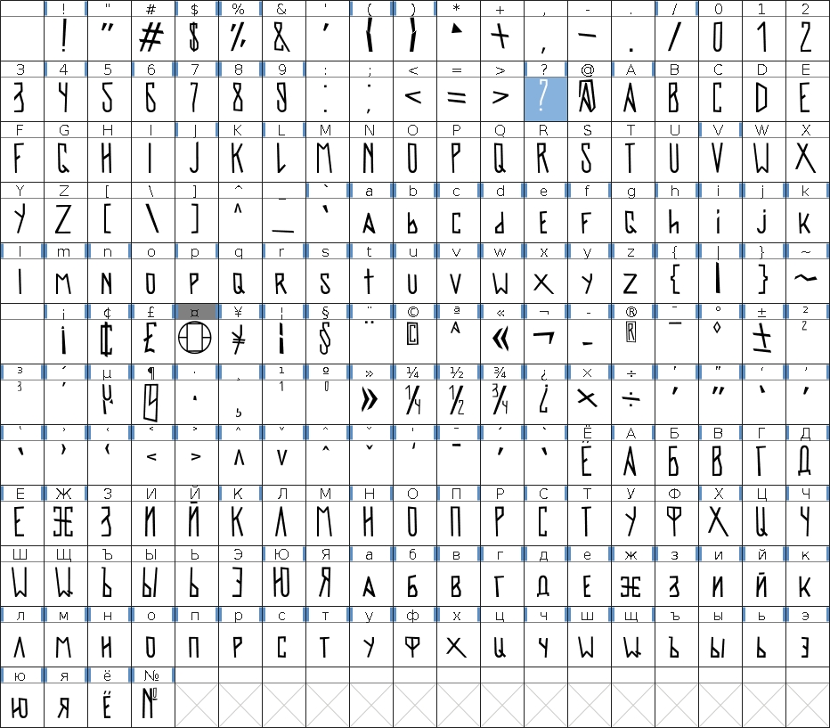
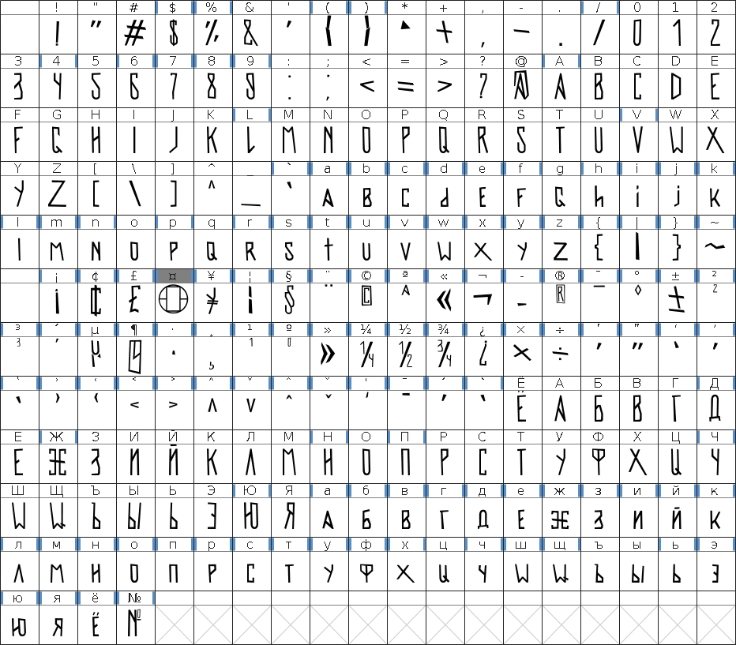
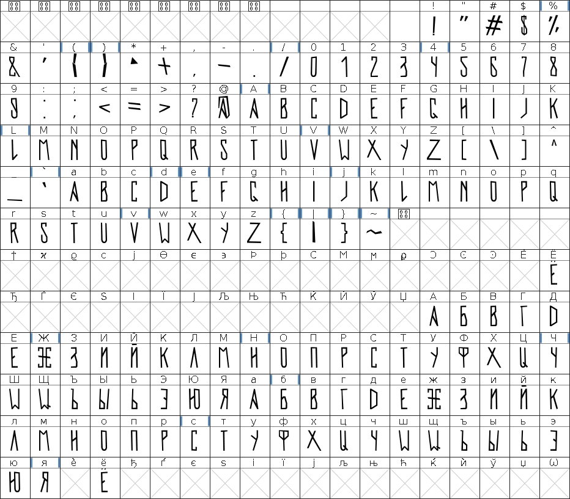
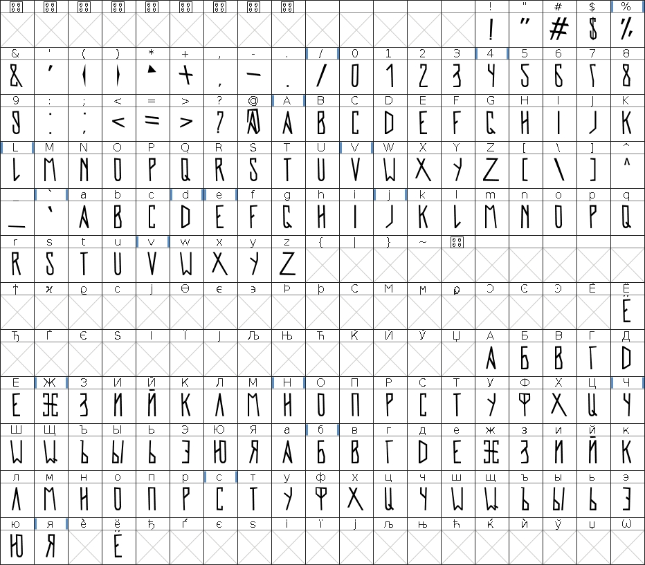
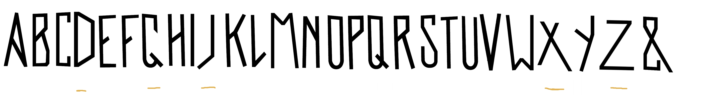

Version 1.4
「!」 and 「?」 have increased distance between the dot and the top
Equalized spacing between all characters

Download
Version 1.3
Added several new characters, support for lowercase letters.
+ some fixes.

Download
Version 1.2
Added Space and a few characters, redesigned parentheses to be more readable and fixed 7.

Download
Version 1.1
A lot of symbols, numbers and Cyrillic (Russian) were added.

Download
Version 1.0
